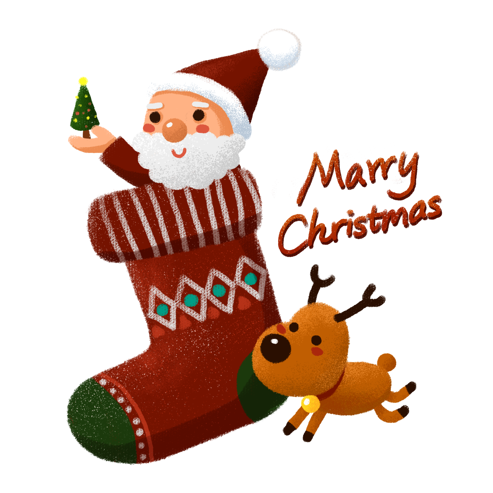

首页
离开
帮助
万圣节
圣诞节
复活节
升天节
受难节
圣诞节简介
圣诞节（Christmas）又称耶诞节、耶稣诞辰，译名为“基督弥撒”，是西方传统节日，起源于基督教，在每年12月25日。弥撒是教会的一种礼拜仪式。圣诞节是一个宗教节，因为把它当作耶稣的诞辰来庆祝，故名“耶诞节”。 大部分的天主教教堂都会先在12月24日的平安夜，亦即12月25日凌晨举行子夜弥撒，而一些基督教会则会举行报佳音，然后在12月25日庆祝圣诞节；基督教的另一大分支——东正教的圣诞节庆则在每年的1月7日。
圣诞节意义
据说耶稣是因着圣灵成孕，由圣母玛利亚所生的。神更叫他不要因为马利亚未婚怀孕而不要她，要与她成亲，把那孩子起名为“耶稣”，意思是要他把百姓从罪恶中救出来。快要临盆的时候，政府下了命令，全部人民到伯利恒务必申报户籍。约瑟和马利亚只好遵命。他们到达伯利恒时，两人未能找到旅馆，只有一个马棚可以住。就在这时，耶稣出生了。后人为纪念耶稣的诞生，便定十二月二十五为圣诞节，年年望弥撒，纪念耶稣的出世。

圣诞节习俗
西方人以红、绿、白三色为圣诞色，圣诞节来临时家家户户都要用圣诞色来装饰。红色的圣诞花。绿色的是圣诞树是圣诞节的主要装饰品，用砍伐来的杉、柏一类呈塔形的常青树装饰而成。上面悬挂着五颜六色的彩灯、礼物和纸花，还点燃着圣诞蜡烛。红色与白色相映成趣的是圣诞老人，他是圣诞节活动中最受欢迎的人物。西方儿童在圣诞夜临睡之前，要在壁炉前或枕头旁放上一只袜子，等候圣诞老人在他们入睡后把礼物放在袜子内。